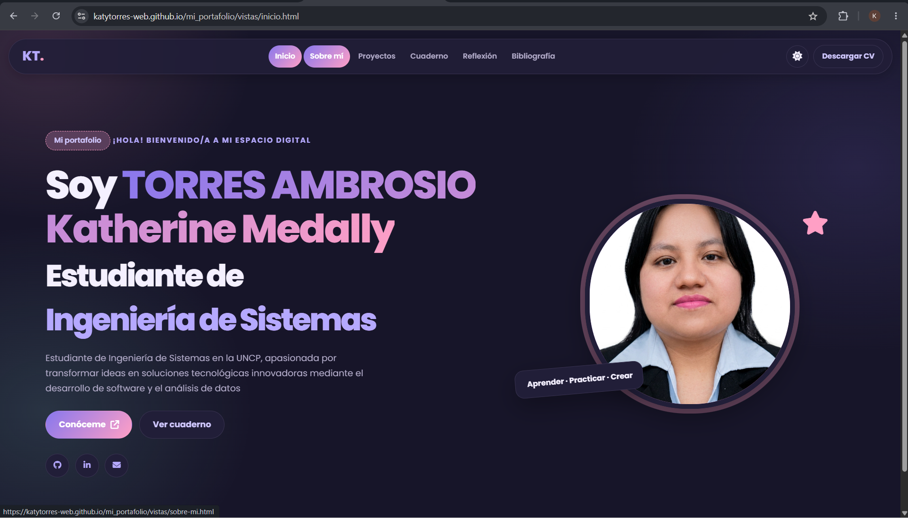

01 / PORTAFOLIOMi portafolio profesional
Portafolio académico que presenta mi perfil, formación, proyectos y evidencias de aprendizaje, con navegación entre páginas y opciones de personalización visual.
HTMLCSSJavaScript